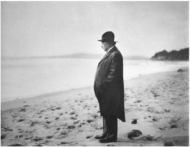

Santa Barbara beach, 1933
One evening in Berlin, Einstein and his wife were at a dinner party when a guest expressed a belief in astrology. Einstein ridiculed the notion as pure superstition. Another guest stepped in and similarly disparaged religion. Belief in God, he insisted, was likewise a superstition.
At this point the host tried to silence him by invoking the fact that even Einstein harbored religious beliefs.
“It isn’t possible!” the skeptical guest said, turning to Einstein to ask if he was, in fact, religious.
“Yes, you can call it that,” Einstein replied calmly. “Try and penetrate with our limited means the secrets of nature and you will find that, behind all the discernible laws and connections, there remains something subtle, intangible and inexplicable. Veneration for this force beyond anything that we can comprehend is my religion. To that extent I am, in fact, religious.”1
As a child, Einstein had gone through an ecstatic religious phase, then rebelled against it. For the next three decades, he tended not to pronounce much on the topic. But around the time he turned 50, he began to articulate more clearly—in various essays, interviews, and letters—his deepening appreciation of his Jewish heritage and, somewhat separately, his belief in God, albeit a rather impersonal, deistic concept of God.
There were probably many reasons for this, in addition to the natural propensity toward reflections about the eternal that can occur at age 50. The kinship he felt with fellow Jews due to their continued oppression reawakened some of his religious sentiments. But mainly, his beliefs seemed to arise from the sense of awe and transcendent order that he discovered through his scientific work.
Whether embracing the beauty of his gravitational field equations or rejecting the uncertainty in quantum mechanics, he displayed a profound faith in the orderliness of the universe. This served as a basis for his scientific outlook—and also his religious outlook. “The highest satisfaction of a scientific person,” he wrote in 1929, is to come to the realization “that God Himself could not have arranged these connections any other way than that which does exist, any more than it would have been in His power to make four a prime number.”2
For Einstein, as for most people, a belief in something larger than himself became a defining sentiment. It produced in him an admixture of confidence and humility that was leavened by a sweet simplicity. Given his proclivity toward being self-centered, these were welcome graces. Along with his humor and self-awareness, they helped him to avoid the pretense and pomposity that could have afflicted the most famous mind in the world.
His religious feelings of awe and humility also informed his sense of social justice. It impelled him to cringe at trappings of hierarchy or class distinction, to eschew excess consumption and materialism, and to dedicate himself to efforts on behalf of refugees and the oppressed.
Shortly after his fiftieth birthday, Einstein gave a remarkable interview in which he was more revealing than he had ever been about his religious thinking. It was with a pompous but ingratiating poet and propagandist named George Sylvester Viereck, who had been born in Germany, moved to America as a child, and then spent his life writing gaudily erotic poetry, interviewing great men, and expressing his complex love for his fatherland.
Having bagged interviews with people ranging from Freud to Hitler to the kaiser, which he would eventually publish as a book called Glimpses of the Great, he was able to secure an appointment to talk to Einstein in his Berlin apartment. There Elsa served raspberry juice and fruit salad; then the two men went up to Einstein’s hermitage study. For reasons not quite clear, Einstein assumed Viereck was Jewish. In fact, Viereck proudly traced his lineage to the family of the kaiser, and he would later become a Nazi sympathizer who was jailed in America during World War II for being a German propagandist.3
Viereck began by asking Einstein whether he considered himself a German or a Jew. “It’s possible to be both,” replied Einstein. “Nationalism is an infantile disease, the measles of mankind.”
Should Jews try to assimilate? “We Jews have been too eager to sacrifice our idiosyncrasies in order to conform.”
To what extent are you influenced by Christianity? “As a child I received instruction both in the Bible and in the Talmud. I am a Jew, but I am enthralled by the luminous figure of the Nazarene.”
You accept the historical existence of Jesus? “Unquestionably! No one can read the Gospels without feeling the actual presence of Jesus. His personality pulsates in every word. No myth is filled with such life.”
Do you believe in God? “I’m not an atheist. The problem involved is too vast for our limited minds. We are in the position of a little child entering a huge library filled with books in many languages. The child knows someone must have written those books. It does not know how. It does not understand the languages in which they are written. The child dimly suspects a mysterious order in the arrangement of the books but doesn’t know what it is. That, it seems to me, is the attitude of even the most intelligent human being toward God. We see the universe marvelously arranged and obeying certain laws but only dimly understand these laws.”
Is this a Jewish concept of God? “I am a determinist. I do not believe in free will. Jews believe in free will. They believe that man shapes his own life. I reject that doctrine. In that respect I am not a Jew.”
Is this Spinoza’s God? “I am fascinated by Spinoza’s pantheism, but I admire even more his contribution to modern thought because he is the first philosopher to deal with the soul and body as one, and not two separate things.”
How did he get his ideas? “I’m enough of an artist to draw freely on my imagination. Imagination is more important than knowledge. Knowledge is limited. Imagination encircles the world.”
Do you believe in immortality? “No. And one life is enough for me.”4
Einstein tried to express these feelings clearly, both for himself and all of those who wanted a simple answer from him about his faith. So in the summer of 1930, amid his sailing and ruminations in Caputh, he composed a credo, “What I Believe.” It concluded with an explanation of what he meant when he called himself religious:
The most beautiful emotion we can experience is the mysterious. It is the fundamental emotion that stands at the cradle of all true art and science. He to whom this emotion is a stranger, who can no longer wonder and stand rapt in awe, is as good as dead, a snuffed-out candle. To sense that behind anything that can be experienced there is something that our minds cannot grasp, whose beauty and sublimity reaches us only indirectly: this is religiousness. In this sense, and in this sense only, I am a devoutly religious man.5
People found it evocative, even inspiring, and it was reprinted repeatedly in a variety of translations. But not surprisingly, it did not satisfy those who wanted a simple, direct answer to the question of whether he believed in God. As a result, getting Einstein to answer that question concisely replaced the earlier frenzy of trying to get him to give a one-sentence explanation of relativity.
A Colorado banker wrote that he had already gotten responses from twenty-four Nobel Prize winners to the question of whether they believed in God, and he asked Einstein to reply as well. “I cannot conceive of a personal God who would directly influence the actions of individuals or would sit in judgment on creatures of his own creation,” Einstein scribbled on the letter. “My religiosity consists of a humble admiration of the infinitely superior spirit that reveals itself in the little that we can comprehend about the knowable world. That deeply emotional conviction of the presence of a superior reasoning power, which is revealed in the incomprehensible universe, forms my idea of God.”6
A little girl in the sixth grade of a Sunday school in New York posed the question in a slightly different form. “Do scientists pray?” she asked. Einstein took her seriously. “Scientific research is based on the idea that everything that takes place is determined by laws of nature, and this holds for the actions of people,” he explained. “For this reason, a scientist will hardly be inclined to believe that events could be influenced by a prayer, i.e. by a wish addressed to a supernatural Being.”
That did not mean, however, there was no Almighty, no spirit larger than ourselves. As he went on to explain to the young girl:
Every one who is seriously involved in the pursuit of science becomes convinced that a spirit is manifest in the laws of the Universe—a spirit vastly superior to that of man, and one in the face of which we with our modest powers must feel humble. In this way the pursuit of science leads to a religious feeling of a special sort, which is indeed quite different from the religiosity of someone more naïve.7
For some, only a clear belief in a personal God who controls our daily lives qualified as a satisfactory answer, and Einstein’s ideas about an impersonal cosmic spirit, as well as his theories of relativity, deserved to be labeled for what they were. “I very seriously doubt that Einstein himself really knows what he is driving at,” Boston’s Cardinal William Henry O’Connell said. But one thing seemed clear. It was godless. “The outcome of this doubt and befogged speculation about time and space is a cloak beneath which hides the ghastly apparition of atheism.”8
This public blast from a cardinal prompted the noted Orthodox Jewish leader in New York, Rabbi Herbert S. Goldstein, to send a very direct telegram: “Do you believe in God? Stop. Answer paid. 50 words.” Einstein used only about half his allotted number of words. It became the most famous version of an answer he gave often: “I believe in Spinoza’s God, who reveals himself in the lawful harmony of all that exists, but not in a God who concerns himself with the fate and the doings of mankind.”9
Einstein’s response was not comforting to everyone. Some religious Jews, for example, noted that Spinoza had been excommunicated from the Jewish community of Amsterdam for holding these beliefs, and he had also been condemned by the Catholic Church for good measure. “Cardinal O’Connell would have done well had he not attacked the Einstein theory,” said one Bronx rabbi. “Einstein would have done better had he not proclaimed his nonbelief in a God who is concerned with fates and actions of individuals. Both have handed down dicta outside their jurisdiction.”10
Nevertheless, most people were satisfied, whether they fully agreed or not, because they could appreciate what he was saying. The idea of an impersonal God, whose hand is reflected in the glory of creation but who does not meddle in daily existence, is part of a respectable tradition in both Europe and America. It is to be found in some of Einstein’s favorite philosophers, and it generally accords with the religious beliefs of many of America’s founders, such as Jefferson and Franklin.
Some religious believers dismiss Einstein’s frequent invocations of God as a mere figure of speech. So do some nonbelievers. There were many phrases he used, some of them playful, ranging from der Herrgott (the Lord God) to der Alte (the Old One). But it was not Einstein’s style to speak disingenuously in order to appear to conform. In fact, just the opposite. So we should do him the honor of taking him at his word when he insists, repeatedly, that these oft-used phrases were not merely a semantic way of disguising that he was actually an atheist.
Throughout his life, he was consistent in deflecting the charge that he was an atheist. “There are people who say there is no God,” he told a friend. “But what makes me really angry is that they quote me for support of such views.”11
Unlike Sigmund Freud or Bertrand Russell or George Bernard Shaw, Einstein never felt the urge to denigrate those who believe in God; instead, he tended to denigrate atheists. “What separates me from most so-called atheists is a feeling of utter humility toward the unattainable secrets of the harmony of the cosmos,” he explained.12
In fact, Einstein tended to be more critical of the debunkers, who seemed to lack humility or a sense of awe, than of the faithful. “The fanatical atheists,” he explained in a letter, “are like slaves who are still feeling the weight of their chains which they have thrown off after hard struggle. They are creatures who—in their grudge against traditional religion as the ‘opium of the masses’—cannot hear the music of the spheres.”13
Einstein would later engage in an exchange on this topic with a U.S. Navy ensign he had never met. Was it true, the sailor asked, that Einstein had been converted by a Jesuit priest into believing in God? That was absurd, Einstein replied. He went on to say that he considered the belief in a God who was a fatherlike figure to be the result of “childish analogies.” Would Einstein permit him, the sailor asked, to quote his reply in his debates against his more religious shipmates? Einstein warned him not to oversimplify. “You may call me an agnostic, but I do not share the crusading spirit of the professional atheist whose fervor is mostly due to a painful act of liberation from the fetters of religious indoctrination received in youth,” he explained. “I prefer the attitude of humility corresponding to the weakness of our intellectual understanding of nature and of our own being.”14
How did this religious instinct relate to his science? For Einstein, the beauty of his faith was that it informed and inspired, rather than conflicted with, his scientific work. “The cosmic religious feeling,” he said, “is the strongest and noblest motive for scientific research.”15
Einstein later explained his view of the relationship between science and religion at a conference on that topic at the Union Theological Seminary in New York. The realm of science, he said, was to ascertain what was the case, but not evaluate human thoughts and actions about what should be the case. Religion had the reverse mandate. Yet the endeavors worked together at times. “Science can be created only by those who are thoroughly imbued with the aspiration toward truth and understanding,” he said. “This source of feeling, however, springs from the sphere of religion.”
The talk got front-page news coverage, and his pithy conclusion became famous: “The situation may be expressed by an image: science without religion is lame, religion without science is blind.”
But there was one religious concept, Einstein went on to say, that science could not accept: a deity who could meddle at whim in the events of his creation or in the lives of his creatures. “The main source of the present-day conflicts between the spheres of religion and of science lies in this concept of a personal God,” he argued. Scientists aim to uncover the immutable laws that govern reality, and in doing so they must reject the notion that divine will, or for that matter human will, plays a role that would violate this cosmic causality.16
This belief in causal determinism, which was inherent in Einstein’s scientific outlook, conflicted not only with the concept of a personal God. It was also, at least in Einstein’s mind, incompatible with human free will. Although he was a deeply moral man, his belief in strict determinism made it difficult for him to accept the idea of moral choice and individual responsibility that is at the heart of most ethical systems.
Jewish as well as Christian theologians have generally believed that people have this free will and are responsible for their actions. They are even free to choose, as happens in the Bible, to defy God’s commands, despite the fact that this seems to conflict with a belief that God is all-knowing and all-powerful.
Einstein, on the other hand, believed, as did Spinoza,17 that a person’s actions were just as determined as that of a billiard ball, planet, or star. “Human beings in their thinking, feeling and acting are not free but are as causally bound as the stars in their motions,” Einstein declared in a statement to a Spinoza Society in 1932.18
Human actions are determined, beyond their control, by both physical and psychological laws, he believed. It was a concept he drew also from his reading of Schopenhauer, to whom he attributed, in his 1930 “What I Believe” credo, a maxim along those lines:
I do not at all believe in free will in the philosophical sense. Everybody acts not only under external compulsion but also in accordance with inner necessity. Schopenhauer’s saying, “A man can do as he wills, but not will as he wills,”19 has been a real inspiration to me since my youth; it has been a continual consolation in the face of life’s hardships, my own and others’, and an unfailing wellspring of tolerance.20
Do you believe, Einstein was once asked, that humans are free agents? “No, I am a determinist,” he replied. “Everything is determined, the beginning as well as the end, by forces over which we have no control. It is determined for the insect as well as for the star. Human beings, vegetables, or cosmic dust, we all dance to a mysterious tune, intoned in the distance by an invisible player.”21
This attitude appalled some friends, such as Max Born, who thought it completely undermined the foundations of human morality. “I cannot understand how you can combine an entirely mechanistic universe with the freedom of the ethical individual,” he wrote Einstein. “To me a deterministic world is quite abhorrent. Maybe you are right, and the world is that way, as you say. But at the moment it does not really look like it in physics—and even less so in the rest of the world.”
For Born, quantum uncertainty provided an escape from this dilemma. Like some philosophers of the time, he latched on to the indeterminacy that was inherent in quantum mechanics to resolve “the discrepancy between ethical freedom and strict natural laws.”22 Einstein conceded that quantum mechanics called into question strict determinism, but he told Born he still believed in it, both in the realm of personal actions and physics.
Born explained the issue to his high-strung wife, Hedwig, who was always eager to debate Einstein. She told Einstein that, like him, she was “unable to believe in a ‘dice-playing’ God.” In other words, unlike her husband, she rejected quantum mechanics’ view that the universe was based on uncertainties and probabilities. But, she added, “nor am I able to imagine that you believe—as Max has told me—that your ‘complete rule of law’ means that everything is predetermined, for example whether I am going to have my child inoculated.”23 It would mean, she pointed out, the end of all ethics.
In Einstein’s philosophy, the way to resolve this issue was to look upon free will as something that was useful, indeed necessary, for a civilized society, because it caused people to take responsibility for their own actions. Acting as if people were responsible for their actions would, psychologically and practically, prompt them to act in a more responsible manner. “I am compelled to act as if free will existed,” he explained, “because if I wish to live in a civilized society I must act responsibly.” He could even hold people responsible for their good or evil, since that was both a pragmatic and sensible approach to life, while still believing intellectually that everyone’s actions were predetermined. “I know that philosophically a murderer is not responsible for his crime,” he said, “but I prefer not to take tea with him.”24
In defense of Einstein, as well as of both Max and Hedwig Born, it should be noted that philosophers through the ages have struggled, sometimes awkwardly and not very successfully, to reconcile free will with determinism and an all-knowing God. Whether Einstein was more or less adept than others at grappling with this knot, there is one salient fact about him that should be noted: he was able to develop, and to practice, a strong personal morality, at least toward humanity in general if not always toward members of his family, that was not hampered by all these irresolvable philosophical speculations. “The most important human endeavor is the striving for morality in our actions,” he wrote a Brooklyn minister. “Our inner balance and even our existence depend on it. Only morality in our actions can give beauty and dignity to life.”25
The foundation of that morality, he believed, was rising above the “merely personal” to live in a way that benefited humanity. There were times when he could be callous to those closest to him, which shows that, like the rest of us humans, he had flaws. Yet more than most people, he dedicated himself honestly and sometimes courageously to actions that he felt transcended selfish desires in order to encourage human progress and the preservation of individual freedoms. He was generally kind, good-natured, gentle, and unpretentious. When he and Elsa left for Japan in 1922, he offered her daughters some advice on how to lead a moral life. “Use for yourself little,” he said, “but give to others much.”26